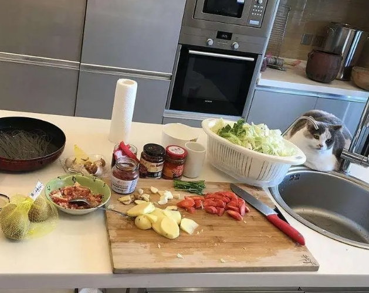
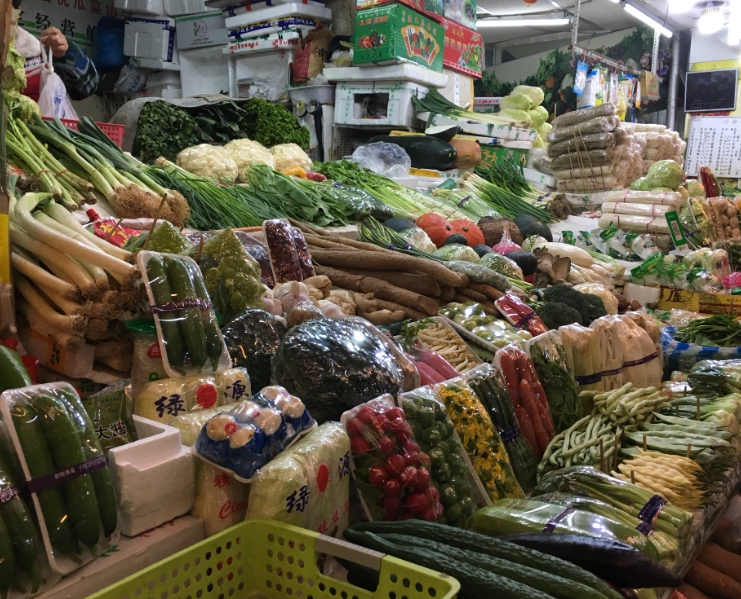
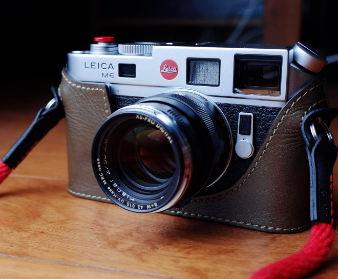
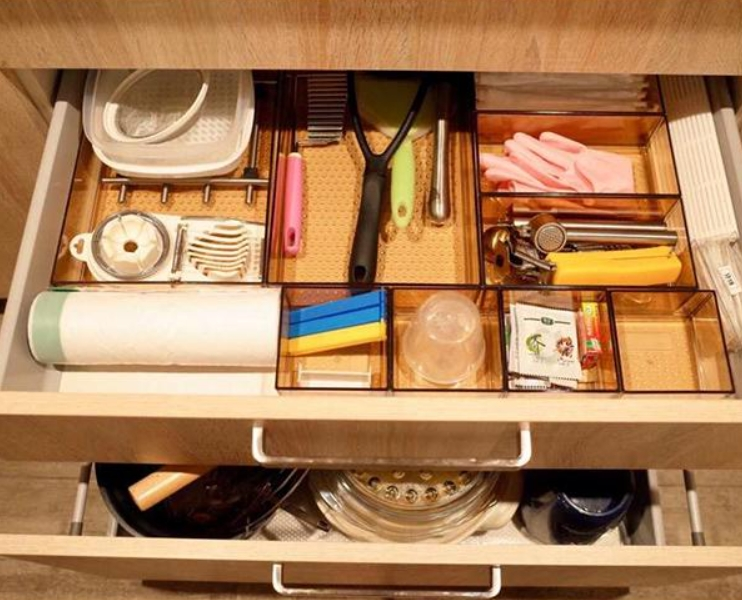

丨技能特长
|  | 做饭做饭，指的是将食物处理制作为餐点的方法和艺术。一个好的菜肴，色香味形俱佳，不但让人在食用时感到满意，而且能让食物的营养更容易被人体吸收。人类需要对食物原料进行“加工”才可以食用，所以会做饭是一个人类基本的生活技巧需求。 |
 | 砍价买卖东西时买方要求卖方在原有价格上削减一部分，是买方消费行为，是指买方在卖方给出的售价基础上要求降价，以达到自己满意价位的行为。“砍价”既能够买到价廉物美的产品，又省下很多的时间和精力。 |
|  | 摄影摄影是指使用某种专门设备进行影像记录的过程，一般我们使用机械照相机或者数码照相机进行摄影。有时摄影也会被称为照相，也就是通过物体所发射或反射的光线使感光介质曝光的过程。 |
 | 收纳理收纳最直观的感受就是让家庭环境变得干净清爽，视觉上变成一种享受。“扩大”你的空间整理收纳能够在视觉上让你感觉空间“变大”了，在很大程度上减少环境给人造成的压抑感。 |